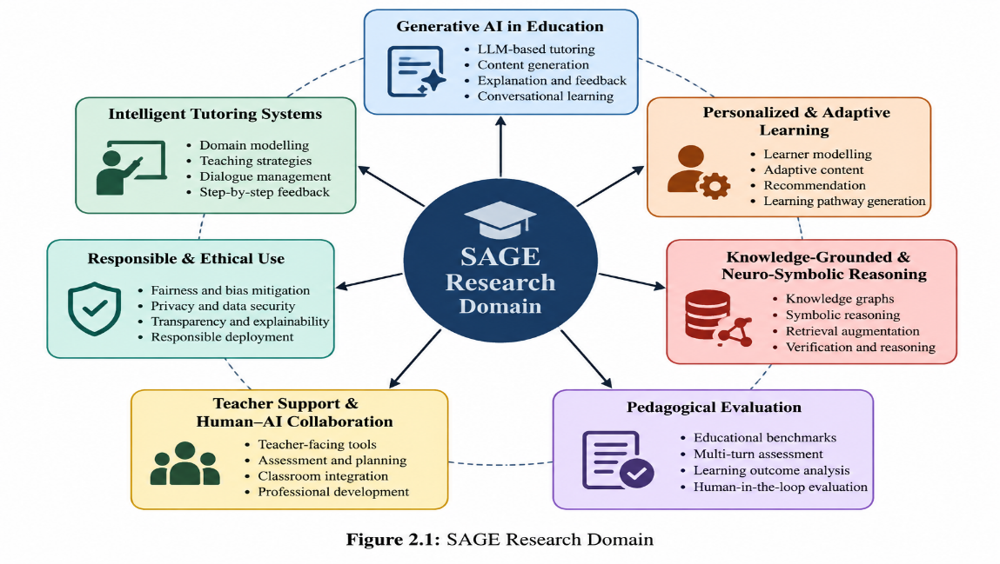
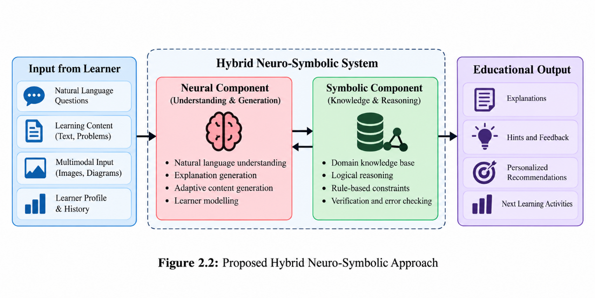
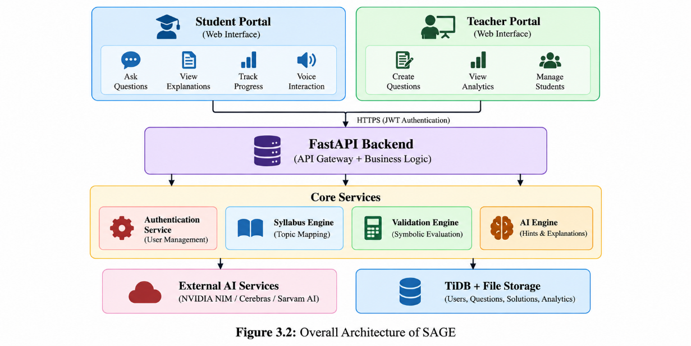
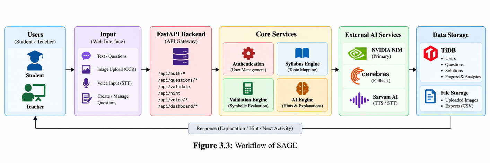
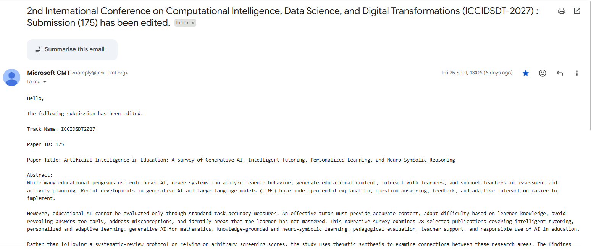

SAGE: SYMBOLIC AI FOR GUIDED EDUCATION
PROJECT REPORT – PHASE I
Submitted by
MUTHU KRISHNA M REGISTER NO: 23UAI067
NAVEEN KUMAR S REGISTER NO: 23UAI070
RAVIKANTH S REGISTER NO: 23UAI088
VISHAAL S REGISTER NO: 23UAI115
Under the guidance of
Dr.J.MADHUSUDANAN
Professor and Head of the Department
in partial fulfillment of the requirements for the degree of
BACHELOR OF TECHNOLOGY
in
DEPARTMENT OF ARTIFICIAL INTELLIGENCE AND DATA SCIENCE
SRI MANAKULA VINAYAGAR ENGINEERING COLLEGE
(An Autonomous Institution)
MADAGADIPET, PUDUCHERRY – 605107
OCTOBER 2026
DEPARTMENT OF ARTIFICIAL INTELLIGENCE AND DATA SCIENCE
BONAFIDE CERTIFICATE
This is to certify that the project work entitled “SAGE: SYMBOLIC AI FOR GUIDED EDUCATION” is a bonafide work done by MUTHU KRISHNA M [23UAI067], NAVEEN KUMAR S [23UAI070], RAVIKANTH S [23UAI088], VISHAAL S [23UAI115] in partial fulfillment of the requirement, for the award of B.Tech Degree in the Department of Artificial Intelligence and Data Science of Pondicherry University during the academic year 2026 - 2027.
PROJECT GUIDE HEAD OF THE DEPARTMENT
Dr. J. Madhusudanan Dr. J. Madhusudanan
Professor, AI&DS Professor, AI&DS
Submitted for the End Semester Project held on __________________________
INTERNAL EXAMINER EXTERNAL EXAMINER
ACKNOWLEDGEMENT
We are thankful and grateful to our beloved Guide and Head of the Department, Dr. J. Madhusudanan, Professor, Department of Artificial Intelligence and Data Science, whose continued support, valuable guidance, and encouragement enabled us to successfully complete our project.
We sincerely thank our Project Coordinator, Mrs. P. Kanchanadevi, Assistant Professor, Department of Artificial Intelligence and Data Science, for her continuous support, valuable suggestions, and guidance throughout the project.
We sincerely thank Dr. V. S. K. Venkatachalapathy, our Director cum Principal, for giving us the opportunity to do our project work successfully.
We sincerely thank our Management, for their support throughout the entire duration of the project.
We thank all our Staff members, Family and Friends for their constant support and encouragement throughout the entire duration of the project.
We would like to thank the ALMIGHTY for his grace and blessings over us throughout the project
The rapid advancement of Artificial Intelligence (AI) and Large Language Models (LLMs) has created new possibilities for developing intelligent and personalized educational systems. Mathematics education requires not only obtaining correct answers but also understanding the reasoning and intermediate steps involved in solving problems. However, existing AI-based tutoring systems may generate incorrect mathematical steps, provide complete solutions without sufficient guidance, and offer limited personalization based on individual student learning needs. The current project proposes SAGE: Symbolic AI for Guided Education, an intelligent mathematics tutoring system that combines the conversational and explanatory capabilities of Large Language Models with symbolic mathematical reasoning. The system is designed to guide students through mathematical problems step by step rather than directly providing final answers. SAGE uses symbolic verification to validate mathematical expressions and intermediate solutions, thereby reducing mathematical errors and improving the reliability of AI-generated explanations. The system also incorporates student knowledge modeling, adaptive hint generation, misconception detection, and personalized feedback to support different levels of student understanding. The proposed approach aims to provide reliable, explainable, personalized, and pedagogically appropriate assistance for students learning engineering mathematics. By integrating generative AI with symbolic reasoning, SAGE seeks to overcome the limitations of conventional AI-based tutoring systems and provide an effective intelligent tutoring environment for mathematics education.
KEYWORDS: Generative Artificial Intelligence, Large Language Models, Intelligent Tutoring Systems, Symbolic AI, Neuro-Symbolic AI, Engineering Mathematics, Personalized Learning, Mathematical Reasoning, Adaptive Tutoring, Explainable AI, Student Modeling, Hint Generation.
Figure No | Name of Figure | Page No |
2.1 | SAGE Research Domain | 6 |
3.1 | Proposed Hybrid Neuro-Symbolic Approach | 31 |
3.2 | Overall Architecture of SAGE | 32 |
3.3 | SAGE Workflow Diagram | 33 |
3.4 | SAGE Usecase Diagram | 35 |
ii
LIST OF ABBREVIATIONS
Abbreviation | Full Form |
AI | Artificial Intelligence |
LLM | Large Language Model |
NLP | Natural Language Processing |
ITS | Intelligent Tutoring System |
GenAI | Generative Artificial Intelligence |
ML | Machine Learning |
DL | Deep Learning |
NLG | Natural Language Generation |
API | Application Programming Interface |
STT | Speech-to-Text |
TTS | Text-to-Speech |
RAG | Retrieval-Augmented Generation |
KG | Knowledge Graph |
XAI | Explainable Artificial Intelligence |
NLP | Natural Language Processing |
CNN | Convolutional Neural Network |
RNN | Recurrent Neural Network |
LSTM | Long Short-Term Memory |
MATH | Mathematical Reasoning Benchmark |
MCP | Model Context Protocol |
DB | Database |
iii
TABLE OF CONTENTS
Chapter No Title Page No
LIST OF ABBVERIATIONSiii
v
CHAPTER 1
INTRODUCTION
Artificial Intelligence (AI) has increasingly become an important component of modern education. Traditional digital learning platforms primarily provide static learning materials, recorded lectures, predefined quizzes, and fixed feedback. Although these systems improve access to educational resources, they often have limited ability to understand individual student difficulties and provide personalized guidance. The emergence of Generative Artificial Intelligence and Large Language Models (LLMs) has created new possibilities for developing intelligent and personalized educational systems [7], [15].Large Language Models are capable of generating human-like explanations, answering questions, solving mathematical problems, and interacting with students through natural-language conversations. These capabilities are particularly useful in mathematics education, where students require assistance not only in obtaining the final answer but also in understanding the reasoning behind each intermediate step [8], [22].
However, mathematical tutoring requires a high level of reliability. An LLM may generate an explanation that appears convincing while containing an incorrect equation, transformation, assumption, or calculation. Research on erroneous feedback in mathematics tutoring has shown the importance of addressing hallucinated or unreliable AI-generated feedback [11]. Therefore, an effective AI-based mathematics tutor should combine the conversational capabilities of LLMs with mechanisms for mathematical verification.SAGE – Symbolic AI for Guided Education is proposed as an intelligent mathematics tutoring framework that combines Large Language Models with symbolic mathematical reasoning. Instead of functioning merely as a mathematical problem-solving system, SAGE is designed to guide students through mathematical problems step by step while verifying mathematical expressions and intermediate solutions using symbolic computation.
1.2 ARTIFICIAL INTELLIGENCE IN EDUCATION
Artificial Intelligence refers to computational systems capable of performing tasks associated with human intelligence, including learning, reasoning, problem solving, language understanding, and decision making. In the field of education, AI has been increasingly explored for intelligent tutoring, personalized learning, assessment, content generation, student support, and educational analytics [7], [15].Conventional digital education systems generally rely on predefined content and fixed instructional rules. Such systems can provide consistent educational material but may not be capable of dynamically responding to the individual needs of every learner. AI-based educational systems can provide more flexible interaction by analyzing student responses and generating context-dependent feedback.
The development of Generative AI and LLMs has expanded the possibilities of AI in education. LLM-based systems can generate explanations, answer questions, create examples, provide hints, and support conversational learning. Research has identified significant opportunities for using LLMs in education, including personalized learning, tutoring, assessment, and educational content generation [7], [15], [17].In mathematics education, however, AI systems must address an additional challenge: mathematical correctness. A language model can produce grammatically correct and convincing explanations even when the mathematical reasoning is incorrect. Such errors can result in students learning incorrect concepts or procedures [11], [22].
1.3 LARGE LANGUAGE MODELS
Large Language Models (LLMs) are advanced AI models trained on large-scale textual data to understand and generate natural language. They are capable of processing user queries, maintaining conversational context, generating explanations, answering questions, and producing different forms of educational content.The use of LLMs in education has grown significantly because students can interact with these systems using natural language. Instead of selecting from predefined options, students can ask questions in their own words and request explanations according to their understanding. Research has identified LLMs as a promising technology for educational applications including tutoring, personalized learning, assessment, and research assistance [7], [17].
In mathematics education, LLMs can provide solutions, explanations, hints, examples, and conversational support. Research has also investigated the ability of LLMs to function as mathematics tutors and has emphasized that tutoring quality should be evaluated beyond the correctness of the final answer [8], [13].However, LLMs generate responses probabilistically rather than performing formal mathematical proof for every generated statement. Consequently, they may produce hallucinated equations, incorrect intermediate calculations, or misleading feedback. Research specifically examining erroneous feedback in mathematics tutoring has highlighted the potential impact of such errors on student learning [11].
1.4 INTELLIGENT TUTORING SYSTEMS
An Intelligent Tutoring System (ITS) is an educational software system designed to provide individualized instruction, guidance, feedback, and assessment to learners. Unlike conventional educational software, an ITS attempts to adapt its behaviour according to the learner's responses and progress.Intelligent tutoring systems are particularly useful for subjects such as mathematics because students may require different types of assistance depending on their current understanding. One student may require a basic conceptual explanation, while another may only need a small hint to continue solving the problem.
Recent research has explored the use of LLMs as intelligent tutors. Studies such as KMP-Bench and MathTutorBench emphasize that an effective AI tutor should not be evaluated only on mathematical correctness. Pedagogical intelligence, hint quality, explanation quality, misconception detection, and tutoring effectiveness are also important factors [3], [13]. Personalized tutoring research has further explored student personas, memory, previous interactions, and forgetting-aware mechanisms to adapt the tutoring experience according to individual learners [9]. Multi-agent and adaptive mathematics tutoring platforms have also been investigated for providing personalized learning experiences [16].
SAGE follows the intelligent tutoring approach by incorporating:
The system therefore aims to function as a learning companion rather than simply as an automated answer generator.
1.5 SYMBOLIC ARTIFICIAL INTELLIGENCE
Symbolic Artificial Intelligence is an approach in which knowledge and reasoning are represented using explicit symbols, rules, logical relationships, and structured mathematical representations. Symbolic reasoning is particularly useful for mathematics because mathematical expressions can be represented and manipulated explicitly.Symbolic mathematical systems can perform operations such as equation solving, expression simplification, differentiation, integration, substitution, and mathematical equivalence checking. These capabilities make symbolic computation suitable for verifying mathematical reasoning generated by an AI system.
Neuro-symbolic research has demonstrated the potential of combining language models with symbolic tools or executable code to improve mathematical reliability. For example, SymCode combines LLM-based reasoning with verifiable code generation to provide more reliable mathematical reasoning [2].However, many symbolic or neuro-symbolic systems primarily focus on solving mathematical problems rather than teaching students how to solve them [2]. SAGE extends this concept by incorporating symbolic mathematical verification within an intelligent tutoring framework.In SAGE, symbolic verification can be used to validate: Mathematical expressions, Algebraic transformations, Equations, Differentiation steps, Integration steps, Simplification steps, Intermediate solutions, Final answers. The symbolic verification component therefore acts as a reliability layer between the generative AI system and the student.
1.6 NEURO-SYMBOLIC AI
Neuro-Symbolic AI combines neural AI techniques with symbolic reasoning. Neural models such as LLMs are effective at understanding natural language and generating flexible responses, whereas symbolic systems are effective at explicit reasoning, structured knowledge representation, and mathematical verification.The combination of these two approaches is particularly useful in mathematics education. An LLM can understand a student's natural-language question and generate a possible explanation, while a symbolic engine can verify the mathematical expressions contained within that explanation.Research on neuro-symbolic AI in education has highlighted the potential of combining LLMs, symbolic knowledge, and structured representations for explainable and reliable educational reasoning [12]. Mathematical reasoning systems such as SymCode further demonstrate how symbolic verification can be integrated with LLM-based reasoning [2].
This architecture separates the responsibilities of natural-language interaction and mathematical verification. The LLM provides conversational intelligence, while the symbolic component checks mathematical correctness before the response is presented to the student.Therefore, SAGE follows a hybrid neuro-symbolic approach rather than depending entirely on either generative AI or rule-based mathematical reasoning.
1.7 PERSONALIZED AND ADAPTIVE LEARNING
Personalized learning is an educational approach in which learning activities, explanations, feedback, and instructional strategies are adapted according to the individual needs of a student. Students may differ in their prior knowledge, learning speed, mathematical ability, common mistakes, and preferred level of explanation.LLM-based personalized tutoring has been investigated using mechanisms such as student personas, memory, and forgetting-aware models. These approaches attempt to adapt tutoring responses according to learner characteristics and previous interactions [9].
Personalization is also important because the same mathematical explanation may not be appropriate for every student. A beginner may require a detailed explanation of the underlying concept, while an advanced student may only require a short hint. Adaptive tutoring can therefore modify the amount and type of assistance according to the student's performance.SAGE maintains a student knowledge model containing information such as: Topics attempted , Correct and incorrect responses ,Previous mistakes ,Number of hints required ,Difficulty level ,Topic mastery ,Previous interactions ,Learning progress.This information can be used to determine the appropriate level of assistance for future interactions. The system can provide progressively stronger hints instead of immediately revealing the complete answer.
The intended process is: Student Attempt → Error Identification → Personalized Hint → Student Re-attempt → Verification → Adaptive Feedback. Automatic hint generation is another important component of adaptive tutoring. Research has explored the use of LLMs for generating mathematical hints, demonstrating the potential of AI-generated guidance in educational technology [10]. By combining personalized learner modeling with symbolic verification, SAGE aims to provide both adaptive learning support and mathematically reliable feedback.
CHAPTER 2
LITERATURE SURVEY
2.1 INTRODUCTION
The rapid development of Generative Artificial Intelligence and Large Language Models (LLMs) has created significant opportunities in the field of education. Researchers have investigated the use of LLMs for mathematical tutoring, personalized learning, automatic hint generation, educational assessment, curriculum support, and intelligent tutoring systems. The literature also explores the limitations of LLM-based educational systems, particularly mathematical hallucinations, unreliable feedback, limited learner modeling, and insufficient pedagogical control.For the development of SAGE – Symbolic AI for Guided Education, a structured review of 30 research papers was conducted. The reviewed literature covers LLM-based education, mathematics tutoring, neuro-symbolic reasoning, personalized tutoring, automatic hint generation, pedagogical evaluation, explainable AI, curriculum scaffolding, and hallucination analysis. The literature shows a progression in AI-based education. Earlier studies primarily explored the use of conversational AI for assisting students with mathematical problems. Later studies focused on personalized explanations, adaptive tutoring, and student modeling. More recent research has concentrated on evaluating the pedagogical capabilities of LLMs and reducing unreliable or hallucinated feedback.Another important research direction is neuro-symbolic reasoning, where LLMs are combined with symbolic computation or executable programs to improve mathematical reliability.

Figure 2.1: SAGE Research Domain
2.2 LITERATURE REVIEW
2.2.1 LLM-Based Mathematics Tutoring
Research Objective / Problem Statement:
Looi et al. [1] investigated the use of Large Language Models in mathematics tutoring and focused on improving the reliability and pedagogical consistency of LLM-generated tutoring responses. The study addresses the problem of unrestricted LLM responses that may provide inconsistent tutoring behaviour or unreliable explanations during mathematical problem solving.
Methodology / Techniques Used:
The researchers developed a rule-integrated LLM tutoring approach in which structured pedagogical rules and constrained response generation were used to control the tutoring process. The approach was evaluated using primary-school mathematical word problems and user-oriented tutoring evaluation.
Key Findings / Results:
The study demonstrated that integrating pedagogical rules with LLM-based tutoring can improve tutoring consistency and reduce undesirable responses. The approach shows that LLMs can be controlled to behave more like structured tutors rather than unrestricted conversational systems.
Limitations / Gaps:
The approach primarily focuses on primary-school mathematics and does not provide a complete symbolic mathematical verification mechanism. Therefore, it does not fully address the requirement of deterministic verification of mathematical expressions.
Conclusion / Relevance to SAGE:
This research provides an important foundation for SAGE because it demonstrates the importance of controlling LLM tutoring behaviour. SAGE extends this concept by combining pedagogical control with symbolic mathematical verification for engineering mathematics.
2.2.2 SymCode: A Neurosymbolic Approach to Mathematical Reasoning via Verifiable Code Generation
Research Objective / Problem Statement:
Bagheri Nezhad et al. [2] addressed the problem of unreliable mathematical reasoning generated by Large Language Models. The objective was to improve mathematical reliability by combining neural language models with symbolic and executable verification.
Methodology / Techniques Used:
The proposed SymCode approach combines an LLM with SymPy and verifiable code generation. Mathematical reasoning is converted into executable representations that can be checked computationally. The approach was evaluated using mathematical benchmarks including MATH-500 and OlympiadBench.
Key Findings / Results:
The approach provides deterministic verification of mathematical reasoning and improves interpretability. The use of executable code and symbolic computation helps reduce errors that can occur when mathematical reasoning is generated entirely by an LLM.
Limitations / Gaps:
The primary focus of SymCode is mathematical problem solving rather than interactive tutoring. It verifies mathematical reasoning but does not provide a complete learner model, adaptive tutoring mechanism, or pedagogical interaction framework.
Conclusion / Relevance to SAGE:
SymCode strongly motivates the symbolic verification component of SAGE. SAGE extends the neurosymbolic concept by integrating symbolic verification with student guidance, misconception detection, adaptive hints, and personalized tutoring.
2.2.3 Evaluating the Pedagogical Intelligence of LLMs with KMP-Bench
Research Objective / Problem Statement:
Shi et al. [3] focused on the problem of evaluating whether LLMs are actually capable of behaving as effective tutors rather than merely functioning as mathematical problem solvers.
Methodology / Techniques Used:
The researchers introduced KMP-Bench, a mathematical tutoring evaluation framework. The benchmark evaluates capabilities such as feedback generation, explanation, error correction, and mathematical problem generation.
Key Findings / Results:
The work demonstrates that mathematical correctness alone is insufficient for evaluating an AI tutor. An effective tutor must also provide meaningful explanations, identify student errors, and offer appropriate pedagogical feedback.
Limitations / Gaps:
KMP-Bench is primarily an evaluation benchmark rather than a complete tutoring architecture. It provides a mechanism for measuring pedagogical intelligence but does not itself implement an integrated AI tutoring system.
Conclusion / Relevance to SAGE:
The study provides the foundation for evaluating SAGE beyond simple mathematical accuracy. SAGE can incorporate similar pedagogical evaluation dimensions such as hint quality, explanation quality, misconception detection, and tutoring effectiveness.
2.2.4 Advanced Black-Box Tuning of Large Language Models with Limited API Calls
Research Objective / Problem Statement:
Xie et al. [4] addressed the challenge of efficiently adapting Large Language Models when only a limited number of API calls are available. The objective was to improve model performance while reducing the cost associated with repeated LLM queries.
Methodology / Techniques Used:
The researchers used a Gaussian Process surrogate model and proxy-based optimization to tune LLM behaviour with limited API calls. The approach focuses on optimizing model performance without requiring excessive interaction with the underlying model.
Key Findings / Results:
The study demonstrates that black-box optimization can improve LLM adaptation while reducing the number of API calls and associated computational cost.
Limitations / Gaps:
The work is primarily focused on general NLP downstream tasks and is not specifically designed for mathematics education or intelligent tutoring.
Conclusion / Relevance to SAGE:
The study is relevant to SAGE from an implementation perspective because efficient LLM usage can reduce API cost and improve system scalability. However, SAGE additionally requires educational and mathematical verification mechanisms.
2.2.5 BARBiE: An Associative Rule-Based Interactive Framework for Explaining Black-Box Models
Research Objective / Problem Statement:
Kumu et al. [5] addressed the lack of transparency in black-box machine-learning models. The research objective was to provide users with understandable explanations of model behaviour.
Methodology / Techniques Used:
The authors developed BARBiE, an associative rule-based interactive explainable AI framework. The system uses rules to provide interactive explanations for the decisions of black-box models.
Key Findings / Results:
The approach improves interpretability by allowing users to understand model behaviour through structured explanations. The work demonstrates the usefulness of rule-based explanations for making AI systems more understandable.
Limitations / Gaps:
BARBiE is not specifically designed for education or mathematical tutoring. Its primary purpose is explaining machine-learning models rather than explaining mathematical reasoning to students.
Conclusion / Relevance to SAGE:
The explainability principles of BARBiE are relevant to SAGE because students should understand why a mathematical step is correct or incorrect. SAGE applies this idea specifically to mathematical tutoring and feedback.
2.2.6 The Impact of Artificial Intelligence on Mathematics Education: A Systematic Literature Review
Research Objective / Problem Statement:
Azmi et al. [6] conducted a systematic review to understand the impact and development of Artificial Intelligence applications in mathematics education. The research addresses the growing use of AI technologies such as intelligent tutoring systems, adaptive learning, AI chatbots, and Generative AI.
Methodology / Techniques Used:
The researchers performed a systematic literature review of existing studies related to AI applications in mathematics education. The reviewed literature covered multiple AI-based educational technologies.
Key Findings / Results:
The review provides a broad overview of how AI is being used in mathematics education and identifies important research directions involving intelligent tutoring, adaptive learning, chatbots, and generative AI.
Limitations / Gaps:
The work is a review-level study rather than a newly implemented tutoring system. Therefore, it does not provide an integrated architecture combining LLMs, symbolic verification, and student modeling.
Conclusion / Relevance to SAGE:
The review provides the broader research foundation for SAGE and helps identify gaps in existing AI based mathematics education systems.
2.2.7 Large Language Models in Education: Vision and Opportunities
Research Objective / Problem Statement:
Gan et al. [7] investigated the potential of Large Language Models in education and examined how LLMs could transform traditional educational systems.
Methodology / Techniques Used:
The study presents a broad survey and research vision covering LLM applications in smart education, including personalized learning, intelligent tutoring, adaptive assessment, and educational support.
Key Findings / Results:
The research identifies LLMs as promising technologies for creating personalized and interactive educational environments. LLMs can support tutoring, assessment, content generation, and adaptive learning.
Limitations / Gaps:
The study is a broad educational survey rather than a domain-specific mathematical tutoring implementation. It also does not provide a dedicated symbolic reasoning mechanism.
Conclusion / Relevance to SAGE:
The study provides the overall conceptual foundation for using LLMs in SAGE. SAGE narrows this broad vision toward engineering mathematics tutoring with symbolic verification and personalized guidance.
2.2.8 Evaluating Large Language Models for Math Tutoring
Research Objective / Problem Statement:
Gupta et al. [8] investigated whether Large Language Models can effectively function as mathematics tutors rather than simply producing correct final answers.
Methodology / Techniques Used:
The research evaluated LLMs on mathematical tutoring tasks and included human assessment of tutoring quality. The study examined tutoring behaviour beyond final-answer correctness.
Key Findings / Results:
The study demonstrated that evaluating an AI mathematics tutor requires more than checking whether the final answer is correct. The quality of explanations and tutoring behaviour is also important.
Limitations / Gaps:
The work evaluates tutoring capabilities but does not integrate a deterministic symbolic verification system.
Conclusion / Relevance to SAGE:
This research directly supports the SAGE philosophy that an AI tutor should guide students instead of simply producing final answers. SAGE further adds symbolic verification to improve mathematical reliability.
2.2.9 Teaching According to Students
Research Objective / Problem Statement:
Wu et al. [9] addressed the problem of providing the same type of tutoring response to students with different learning abilities and histories.
Methodology / Techniques Used:
The research proposed the TASA framework, which incorporates student persona, memory, and forgetting-aware mechanisms for personalized mathematics tutoring.
Key Findings / Results:
The approach supports dynamic learner modeling and adaptive tutoring. The tutoring system can use information about the learner to provide more personalized responses.
Limitations / Gaps:
The approach relies substantially on LLM-based reasoning and does not provide deterministic symbolic validation of mathematical responses.
Conclusion / Relevance to SAGE:
This research strongly motivates the Student Knowledge Modeling component of SAGE. SAGE combines similar personalization mechanisms with symbolic mathematical verification.
2.2.10 Automatic Generation of Question Hints for Mathematics Problems Using Large Language Models in Educational Technology
Research Objective / Problem Statement:
Tonga et al. [10] addressed the problem of automatically generating useful hints for students solving mathematical problems.
Methodology / Techniques Used:
The researchers investigated LLM-based automatic hint generation for mathematics exercises and evaluated different prompting strategies for generating pedagogically useful assistance.
Key Findings / Results:
The study demonstrates that LLMs can generate mathematical hints and support adaptive scaffolding. Hints can be used to assist students without immediately providing complete solutions.
Limitations / Gaps:
Hint quality depends on prompting, model behaviour, and the particular error or problem condition. The approach does not provide deterministic mathematical verification.
Conclusion / Relevance to SAGE:
This work directly supports SAGE's Adaptive Hint Generation Module. SAGE extends automatic hint generation by connecting it with student modeling and symbolic verification.
2.2.11 When LLMs Hallucinate: Examining the Effects of Erroneous Feedback in Math Tutoring Systems
Research Objective / Problem Statement:
Steinbach et al. [11] investigated the problem of hallucinated or erroneous feedback generated by LLM based mathematics tutoring systems.
Methodology / Techniques Used:
The study examined an LLM-based mathematics tutoring environment and analyzed the educational effects of incorrect AI-generated feedback. Evaluation included learning gain, confusion, time-on-task, and feedback accuracy.
Key Findings / Results:
The research demonstrates that incorrect tutoring feedback can affect the learning process and highlights the importance of controlling the reliability of AI-generated educational feedback.
Limitations / Gaps:
The research primarily focuses on hallucination and feedback reliability and does not implement a symbolic verification mechanism.
Conclusion / Relevance to SAGE:
This is one of the most important studies motivating SAGE's symbolic verification layer. SAGE attempts to reduce the propagation of mathematically incorrect feedback by verifying mathematical reasoning before tutoring responses are delivered.
2.2.12 Neuro-Symbolic Synergy in Education: A Survey of LLM–Knowledge Graph Integration
Research Objective / Problem Statement:
Ben Chaabene and Hammami [12] investigated the integration of LLMs with knowledge graphs and neuro-symbolic approaches to improve explainability and student support in educational systems.
Methodology / Techniques Used:
The study presents a survey of neuro-symbolic educational AI research, including the integration of LLMs, knowledge graphs, and structured reasoning.
Key Findings / Results:
The research highlights the potential of neuro-symbolic approaches for explainable reasoning and structured educational support.
Limitations / Gaps:
The work is primarily a survey and does not provide a complete evaluated tutoring implementation.
Conclusion / Relevance to SAGE:
The research supports the neuro-symbolic philosophy of SAGE. SAGE applies the same general principle to mathematical tutoring by combining LLM interaction with symbolic mathematical reasoning.
2.2.13 MathTutorBench: A Benchmark for Measuring Open-Ended Pedagogical Capabilities of LLM Tutors
Research Objective / Problem Statement:
Macina et al. [13] addressed the need for better evaluation methods for LLM-based tutors. Traditional evaluation often focuses mainly on answer correctness and does not adequately measure pedagogical capabilities.
Methodology / Techniques Used:
The researchers developed MathTutorBench, a benchmark containing datasets, evaluation methods, and metrics for assessing open-ended mathematical tutoring.
Key Findings / Results:
The benchmark provides a structured way to evaluate tutoring quality and demonstrates that mathematical expertise does not automatically guarantee effective teaching.
Limitations / Gaps:
MathTutorBench is an evaluation framework rather than a complete educational tutoring system. Conclusion / Relevance to SAGE: The benchmark is useful for evaluating SAGE's performance in areas such as explanation quality, tutoring behaviour, and pedagogical effectiveness in addition to mathematical correctness.
2.2.14 Exploring the Potential of LLM to Enhance Teaching Plans Through Teaching Simulation
Research Objective / Problem Statement:
Hu et al. [14] investigated whether Large Language Models could improve teaching plans through simulated teacher-student interactions.
Methodology / Techniques Used:
The approach uses LLM-based teaching simulation and reflection to generate and improve teaching plans. Simulated interactions are used to identify potential improvements in instructional strategies.
Key Findings / Results:
The research demonstrates that LLMs can assist in educational planning and can simulate teacherstudent interactions to improve teaching strategies.
Limitations / Gaps:
The study primarily supports teachers and teaching-plan development rather than direct student tutoring.
Conclusion / Relevance to SAGE:
The work demonstrates the broader educational capabilities of LLMs. SAGE applies LLM capabilities directly to student-level mathematical tutoring and adaptive guidance.
2.2.15 The Role of Large Language Models in Personalized Learning: A Systematic Review of Educational Impact
Research Objective / Problem Statement:
Sharma et al. [15] investigated the educational impact of LLM-based personalized learning and examined how Generative AI can support individualized educational experiences.
Methodology / Techniques Used:
The authors conducted a systematic literature review covering the application of LLMs in personalized education.
Key Findings / Results:
The review identifies adaptive learning, personalized explanations, and learner-specific educational support as important applications of LLMs.
Limitations / Gaps:
As a review-level study, it does not provide a complete implementation. Long-term educational effects also require further empirical validation.
Conclusion / Relevance to SAGE:
The research supports the inclusion of personalized learning and student modeling within SAGE.
2.2.16 AI-Powered Math Tutoring: Platform for Personalized and Adaptive Education
Research Objective / Problem Statement:
Chudziak and Kostka [16] focused on developing an AI-based platform capable of providing personalized and adaptive mathematics learning.
Methodology / Techniques Used:
The proposed approach uses a modular multi-agent AI tutoring architecture in which different components support personalized mathematics education.
Key Findings / Results:
The modular architecture demonstrates how specialized AI agents can be used to support adaptive learning and personalized tutoring.
Limitations / Gaps:
The system does not provide sufficiently strong deterministic mathematical verification.
Conclusion / Relevance to SAGE:
The study provides useful architectural inspiration for SAGE's modular design. SAGE combines modular tutoring functions with a symbolic verification component to improve mathematical reliability.
2.2.17 Large Language Models for Education and Research: An Empirical and User Survey-Based Analysis
Research Objective / Problem Statement:
Rahman et al. [17] investigated the use and perception of Large Language Models in education and research through empirical analysis and user-based evaluation.
Methodology / Techniques Used:
The study uses an empirical and survey-based analysis to examine the capabilities and limitations of LLMs across educational and research applications.
Key Findings / Results:
The research provides broader evidence regarding how users interact with and evaluate LLM-based systems in educational environments.
Limitations / Gaps:
The work provides broad LLM evaluation rather than implementing a dedicated mathematics tutoring architecture.
Conclusion / Relevance to SAGE:
The study provides supporting evidence for the use of LLMs in educational applications while reinforcing the need for domain-specific tutoring architectures such as SAGE.
2.2.18 Problems With Large Language Models for Learner Modelling
Research Objective / Problem Statement:
Hooshyar et al. [18] investigated whether LLMs alone are sufficient for responsible learner modeling in K–12 education.
Methodology / Techniques Used:
The research compares LLM-based learner modeling with Deep Knowledge Tracing and examines how effectively different approaches represent learner progress over time.
Key Findings / Results:
The study identifies temporal and consistency limitations in LLM-only learner modeling. It demonstrates the importance of structured approaches for maintaining reliable information about learner knowledge.
Limitations / Gaps:
The research focuses primarily on K–12 education and learner modeling rather than a complete mathematics tutoring system.
Conclusion / Relevance to SAGE:
The findings support SAGE's use of a structured Student Knowledge Model rather than relying entirely on the LLM's conversational memory.
2.2.19 Systematic Review of the Interdisciplinary Exchange Among Mathematics Education and Neuroscience
Research Objective / Problem Statement:
Leikin et al. [19] investigated the relationship between mathematics education and neuroscience research to understand the interdisciplinary development of mathematical learning research.
Methodology / Techniques Used:
The researchers conducted a systematic literature review covering a large body of mathematics education research and examining connections with neuroscience.
Key Findings / Results:
The study provides a broad understanding of mathematical learning and the interdisciplinary factors involved in mathematics education.
Limitations / Gaps:
The research is not specifically focused on Artificial Intelligence or LLM-based tutoring systems.
Conclusion / Relevance to SAGE:
Although it is not an AI-specific study, it provides educational background that can help SAGE consider principles related to mathematical learning and learner support.
2.2.20 Distinct Neural Representational Changes Following Cross-Format Number Tutoring in Children with Mathematical Difficulties
Research Objective / Problem Statement:
Park et al. [20] investigated how structured number tutoring affects learning in children experiencing mathematical difficulties.
Methodology / Techniques Used:
The study examined cross-format number tutoring and associated neural representational changes in children with mathematical learning difficulties.
Key Findings / Results:
The research demonstrates that structured tutoring can produce measurable learning-related changes and supports the importance of appropriately designed mathematical instruction.
Limitations / Gaps:
The work is primarily neuroscience-oriented and does not implement an AI tutoring system.
Conclusion / Relevance to SAGE:
The study provides educational evidence supporting the importance of structured and personalized mathematical tutoring. SAGE applies this principle through adaptive AI-based mathematical guidance.
2.2.21 ChatGPT-Generated Help Produces Learning Gains Equivalent to Human Tutor-Authored Help on Mathematics Skills
Research Objective / Problem Statement:
Pardos and Bhandari [21] investigated whether ChatGPT-generated educational assistance could produce learning outcomes comparable to help created by human tutors.
Methodology / Techniques Used:
The research evaluated ChatGPT-generated help using mathematics skills involving elementary algebra, intermediate algebra, college algebra, and statistics. The study involved 274 participants and used learning gain, time-on-task, and statistical significance as evaluation measures.
Key Findings / Results:
The study demonstrated measurable learning gains from ChatGPT-generated assistance and showed the potential of LLM-generated tutoring support.
Limitations / Gaps:
The study also identifies the need for quality control because AI-generated responses can contain hallucinated or incorrect information.
Conclusion / Relevance to SAGE:
This work provides evidence that LLMs can support mathematics learning. SAGE builds on this potential while adding symbolic verification to improve the reliability of generated mathematical assistance.
2.2.22 Math Education with Large Language Models: Peril or Promise?
Research Objective / Problem Statement:
Kumar et al. [22] investigated both the opportunities and risks associated with using Large Language Models in mathematics education.
Methodology / Techniques Used:
The study used a controlled educational investigation involving approximately 1,200 participants and examined GPT-generated personalized mathematical explanations and their effect on learning.
Key Findings / Results:
The research indicates that LLM-generated explanations can support learning, particularly when students attempt problems before receiving assistance.
Limitations / Gaps:
LLM-generated mathematical explanations are not always mathematically reliable. This creates a requirement for mechanisms capable of checking mathematical reasoning.
Conclusion / Relevance to SAGE:
The research strongly motivates SAGE's guided-learning philosophy. Students should attempt problems first and receive appropriate assistance rather than immediately receiving complete solutions.
2.2.23 An Analysis of Large Language Models and LangChain in Mathematics Education
Research Objective / Problem Statement:
Soygazi and Oguz [23] investigated the application of Large Language Models and LangChain to mathematics education and mathematical problem solving.
Methodology / Techniques Used:
The study explored ChatGPT and LangChain-based approaches for mathematical word problems and analyzed their performance qualitatively and through mathematical accuracy.
Key Findings / Results:
The work demonstrated the potential of conversational AI for assisting students with mathematics and showed how LLM frameworks can be incorporated into educational applications.
Limitations / Gaps:
The system relies primarily on LLM reasoning and does not incorporate deterministic symbolic mathematical verification.
Conclusion / Relevance to SAGE:
This research demonstrates the feasibility of conversational mathematics tutoring. SAGE extends this approach by introducing symbolic verification and structured pedagogical guidance.
2.2.24 AutoTutor Meets Large Language Models: A Language Model Tutor with Rich Pedagogy and Guardrails
Research Objective / Problem Statement:
Chowdhury et al. [24] addressed the challenge of making LLMs behave more like structured educational tutors rather than unrestricted conversational agents.
Methodology / Techniques Used:
The system combines AutoTutor, GPT-4, finite-state tutoring control, and pedagogical guardrails for mathematics word problems.
Key Findings / Results:
The approach introduces structured tutoring behaviour and pedagogical guardrails that help control the interaction between the student and the AI tutor.
Limitations / Gaps:
The system does not provide deterministic symbolic verification of mathematical correctness.
Conclusion / Relevance to SAGE:
This research is closely related to SAGE's pedagogical approach. SAGE extends the concept of pedagogical guardrails by integrating symbolic mathematical verification with the tutoring workflow.
2.2.25 Scaffolding Middle-School Mathematics Curricula with Large Language Models
Research Objective / Problem Statement:
Malik et al. [25] investigated the use of LLMs to support mathematics teachers in developing curriculum scaffolding and adaptive instructional material.
Methodology / Techniques Used:
The approach uses GPT-based curriculum scaffolding for middle-school mathematics. LLMs assist in creating adaptive instructional structures and learning support.
Key Findings / Results:
The research demonstrates that LLMs can support teachers in developing curriculum scaffolds and adapting instructional content.
Limitations / Gaps:
The work is primarily teacher-oriented rather than an interactive student tutoring system. It does not provide the complete learner interaction and mathematical verification architecture required by SAGE.
Conclusion / Relevance to SAGE:
The research demonstrates the usefulness of LLMs for adaptive mathematics education. SAGE focuses on direct student interaction and combines adaptive tutoring with symbolic verification.
2.2.26 LLM-Generated Competence-Based E-Assessment Items for Higher Education Mathematics
Research Objective / Problem Statement:
Meissner et al. [26] investigated the automatic generation of competence-based assessment items for higher-education mathematics.
Methodology / Techniques Used:
The study uses GPT-based question generation to automatically generate mathematical assessment questions based on competence requirements.
Key Findings / Results:
The approach demonstrates that LLMs can automatically generate mathematics assessment items and can support educational assessment workflows.
Limitations / Gaps:
The primary focus is assessment generation rather than interactive tutoring. Generated questions also require human evaluation to ensure quality and suitability.
Conclusion / Relevance to SAGE:
The work provides a potential foundation for future SAGE assessment functionality. SAGE can potentially extend its tutoring architecture to generate and evaluate personalized mathematical exercises.
2.2.27 Large Language Models Approach Expert Pedagogical Quality in Math Tutoring but Differ in Instructional and Linguistic Profiles
Research Objective / Problem Statement:
Abdulsalam and Aroyehun [27] investigated whether LLMs can achieve pedagogical quality comparable to expert human mathematics tutors.
Methodology / Techniques Used:
The researchers performed a comparative analysis of LLM tutoring behaviour against human tutoring profiles, examining pedagogical and linguistic characteristics.
Key Findings / Results:
The study indicates that LLMs can approach expert-level pedagogical quality in some aspects of mathematics tutoring. However, differences remain in instructional behaviour and linguistic profiles.
Limitations / Gaps:
The study identifies differences between LLM-generated tutoring and expert tutoring. It does not itself provide a complete structured tutoring architecture or symbolic verification mechanism.
Conclusion / Relevance to SAGE:
The research supports the use of LLMs for tutoring while demonstrating the importance of structured pedagogical control. SAGE addresses this through its tutoring workflow and verification layer.
2.2.28 Beyond Answers: Large Language Model-Powered Tutoring System in Physics Education for Deep Learning and Precise Understanding
Research Objective / Problem Statement:
Jiang and Jiang [28] addressed the limitation of AI systems that provide answers without sufficiently supporting deep conceptual learning.
Methodology / Techniques Used:
The researchers developed Physics-STAR, a personalized and adaptive LLM-based tutoring system for physics education. The system uses step-by-step tutoring and adapts support according to student performance.
Key Findings / Results:
The system demonstrates the potential of personalized and adaptive LLM tutoring for supporting deeper understanding rather than merely producing final answers.
Limitations / Gaps:
The system is designed specifically for physics education, making direct application to engineering mathematics limited. It also does not focus on symbolic mathematical verification.
Conclusion / Relevance to SAGE:
Physics-STAR provides useful architectural inspiration for SAGE's personalized and step-wise tutoring approach. SAGE adapts these principles to engineering mathematics and adds symbolic verification.
2.2.29 LLMs Are Already Good Tutors: Training-Free Prompt Optimization for Pedagogical Math Tutoring
Research Objective / Problem Statement:
Lee et al. [29] investigated whether the pedagogical performance of LLM-based mathematics tutors can be improved without retraining the underlying language model.
Methodology / Techniques Used:
The researchers used training-free prompt optimization to improve the tutoring behaviour of LLMs. The approach was evaluated using pedagogical mathematics tutoring benchmarks.
Key Findings / Results:
Prompt optimization improved tutoring-related performance without requiring model retraining. The study demonstrates that carefully designed prompts can influence tutoring quality.
Limitations / Gaps:
The approach still depends entirely on LLM reasoning and does not provide deterministic mathematical verification.
Conclusion / Relevance to SAGE:
The research supports the importance of prompt engineering in SAGE's conversational tutoring module. However, SAGE goes beyond prompt optimization by adding symbolic verification, learner modeling, and structured tutoring control.
2.2.30 A Comprehensive Survey on Large-Language-Model-Based Agents for Education
Research Objective / Problem Statement:
Yang et al. [30] conducted a comprehensive survey of LLM-based educational agents and investigated how autonomous AI agents can support different educational activities.
Methodology / Techniques Used:
The survey organizes educational AI agents across capabilities including perception, student profiling, memory, reasoning, action, teaching, learning, and assessment.
Key Findings / Results:
The study demonstrates that LLM-based agents can support a wide range of educational functions. It also highlights the potential of specialized agents for different educational tasks.
Limitations / Gaps:
The work is a survey-level study and does not implement a complete multi-agent tutoring system. Practical coordination between specialized agents remains a challenge.
Conclusion / Relevance to SAGE:
This research provides a broader architectural perspective for SAGE. The concepts of student profiling, memory, reasoning, teaching, and assessment are directly relevant to the development of a comprehensive intelligent tutoring framework.
Table 2.1: Summary of Reviewed Literature
Theme | Representative Studies | Main Contribution | Gap for SAGE |
LLM-based tutoring | [1], [8], [21]–[24], [27], [29] | LLMs explain problems, give help, and can be controlled with rules and guardrails | No symbolic verification of the mathematics |
Neuro-symbolic reasoning | [2], [5], [12] | Symbolic tools and rules make reasoning checkable and explainable | Not designed for guided tutoring |
Evaluation and reliability | [3], [11], [13], [18] | Pedagogical benchmarks; effects of wrong feedback; limits of LLM learner models | Identify problems but give no complete solution |
Personalization and hints | [9], [10], [15], [16], [28] | Learner memory, adaptive hints, and multi-agent tutoring | Hints and student models not tied to verified reasoning |
Surveys and other applications | [4], [6], [7], [14], [17], [19], [20], [25], [26], [30] | Overview of LLMs and agents in education, planning, and assessment | General; not specific to mathematics tutoring |
Overall, the literature shows that LLMs are effective for explanations, hints, and personalization, but they can still produce incorrect or unguided responses. Very few studies combine symbolic verification, misconception detection, adaptive hints, and student modelling in a single tutoring system. This gap forms the motivation for SAGE.
2.3 EXISTING SOLUTIONS AND ISSUES IN THE SYSTEM
Several AI-based systems have been developed to support mathematics learning. They can be grouped into six types, and each has strengths as well as limitations.
Rule-based tutoring systems. Traditional Intelligent Tutoring Systems compare the student's answer with predefined rules and knowledge bases. Their feedback is predictable, but they need extensive manual rule development, handle unexpected answers poorly, and have limited natural-language understanding. Rule-integrated LLM tutors [1] try to combine language flexibility with pedagogical rules, which shows that controlling an AI tutor can improve its consistency.LLM-based tutors. Models such as GPT can understand natural-language questions and generate explanations, examples, and hints, and in some studies they produced learning gains comparable to human-authored help [21]–[23]. However, they may give incorrect reasoning, hallucinated content, inconsistent feedback, or complete answers when the student only needs guidance [8], [11]. Relying entirely on an LLM for mathematical tutoring is therefore not sufficiently reliable. Their main advantages are natural-language interaction, flexible question answering, automatic hint generation, and large-scale content generation.
Personalized and adaptive systems. These tutors adapt the learning experience using learner persona, memory, and previous interactions [9]. Personalization improves explanations and hints, but it does not guarantee mathematical correctness; an incorrect explanation may simply be delivered in a more targeted way. Their main advantages are individualized hints, memory of previous interactions, adaptive difficulty, and identification of repeated mistakes.Symbolic systems. Tools such as SymPy perform exact and verifiable operations such as solving, differentiation, integration, simplification, and equivalence checking. However, they offer little conversational interaction or pedagogical explanation.Neuro-symbolic and multi-agent systems. Neuro-symbolic approaches such as SymCode [2] pair a neural model with symbolic computation for reliable mathematical reasoning. Multi-agent platforms [16], [30] divide tutoring, assessment, student modelling, verification, and feedback among specialized agents, which makes the system modular, though coordination between agents remains a challenge. Such architectures show that combining verification, student modelling, and feedback in separate modules is a practical design direction.
Guidance. Many systems act as problem solvers rather than tutors. They may reveal the full answer too early (answer leakage), detect that an answer is wrong without identifying the type of mistake, and give fixed or unadaptive hints [10]. Students may become dependent on the system instead of developing independent problem-solving skills, and errors such as arithmetic, sign, formula, or conceptual mistakes are not treated differently.
Personalization and tracking. Systems often give similar explanations to all students, do not keep a structured and persistent model of student knowledge [18], and do not track progress continuously to find repeated mistakes or changes in topic mastery.Pedagogy and integration. A correct answer is not always good teaching, and tutors need better pedagogical control and evaluation [3], [13]. Feedback is also often a black box that does not explain how a result was verified. Furthermore, reasoning, hints, learner modelling, and personalization are usually studied separately and are not combined in one end-to-end system.Research gap. There is no unified tutoring system that offers mathematical reliability, conversational intelligence, personalization, misconception detection, adaptive hints, and pedagogical control together. SAGE is proposed to fill this gap by combining LLM-based tutoring with symbolic verification and student progress tracking.
CHAPTER 3
PROPOSED SYSTEM
The rapid development of Generative AI has made it possible to create conversational mathematical tutors. However, current LLM-based systems may produce mathematically incorrect reasoning, reveal complete answers, provide generic explanations, and fail to maintain detailed learner information. The problem addressed by this project is therefore defined as, To develop a hybrid neuro-symbolic intelligent tutoring system capable of providing step-by-step mathematical guidance while verifying mathematical operations, identifying student misconceptions, adapting hints according to learner performance, and maintaining student learning progress.The system should provide a balance between: Mathematical Accuracy + Natural Interaction + Personalized Learning + Pedagogical Guidance.The proposed SAGE system is designed to achieve these objectives by combining an LLM with symbolic mathematics and a structured student model.

Figure 3.1: Proposed Hybrid Neuro-Symbolic Approach
SAGE – SYMBOLIC AI FOR GUIDED EDUCATION
SAGE is a hybrid neuro-symbolic intelligent tutoring system for engineering mathematics.The system combines the conversational capabilities of Large Language Models with symbolic mathematical verification. The major components of the proposed system are:
The basic working principle is: Student Input → LLM Interpretation → Mathematical Verification → Pedagogical Decision → Adaptive Response → Student. The proposed architecture attempts to ensure that mathematical correctness is considered before the final response is presented.
3.3 SYSTEM ARCHITECTURE

Figure 3.2: Overall Architecture of SAGE
1. Student Interface
The Student Interface is a web-based platform through which students interact with the SAGE system. Students can enter mathematical problems, submit solution steps, ask questions, request hints, view explanations, and track their learning progress.
2. LLM Tutoring Controller
The LLM Tutoring Controller manages the interaction between the student and the AI model. It interprets the student’s natural-language queries and generates appropriate tutoring responses.
3. Problem Understanding Module
The Problem Understanding Module analyzes the mathematical problem provided by the student. It identifies the problem type, mathematical topic, required operations, and relevant mathematical concepts.
4. Student Knowledge Model
The Student Knowledge Model maintains information about the learner’s previous performance and level of mastery across different mathematical topics. This information is used to personalize the tutoring experience.
5. Symbolic Verification Engine
The Symbolic Verification Engine verifies mathematical expressions and solution steps using symbolic computation. It helps determine whether the student’s calculations and reasoning are mathematically correct.
6. Misconception Detection Module
The Misconception Detection Module identifies possible mathematical mistakes and misunderstandings in the student’s solution. It helps the system recognize areas where the learner may require additional support.
7. Adaptive Hint Generator
The Adaptive Hint Generator provides hints based on the student’s performance, errors, and current level of understanding. The hints are designed to guide the student toward the correct solution without directly providing the answer.
8. Personalized Explanation Generator
The Personalized Explanation Generator produces explanations that are adapted to the learner’s estimated knowledge level. This allows SAGE to provide explanations that are appropriate to the student’s abilities and learning needs.

Figure 3.3: SAGE Workflow Diagram
The workflow of SAGE consists of the following stages.
Step 1 – Student Input
The student enters a mathematical problem or submits a solution step.
Step 2 – Natural Language Understanding
The LLM interprets the student's question and identifies the mathematical task.
Step 3 – Student Model Retrieval
The system retrieves information about the student's previous attempts, mistakes, topic mastery, and hint usage.
Step 4 – Mathematical Processing
The mathematical expression is converted into a form suitable for symbolic processing.
Step 5 – Symbolic Verification
The symbolic engine checks the mathematical validity of the student's step.
Step 6 – Misconception Detection
If the step is incorrect, the system attempts to identify the type of error.
Step 7 – Pedagogical Decision
The system determines how much assistance should be provided.
Step 8 – Hint Generation
An appropriate hint is generated.
Step 9 – Response Verification
Mathematical content in the generated response is verified where applicable.
Step 10 – Student Feedback
The verified explanation or hint is presented to the student.
Step 11 – Progress Update
The student's performance is stored and the student model is updated.The complete workflow is: Student Input → LLM Interpretation → Symbolic Verification → Error Analysis → Pedagogical Decision → Hint/Explanation → Verification → Student Response → Progress Update
Figure 3.4: SAGE Usecase Diagram
The SAGE system provides different functions to support students throughout the mathematical learning process. The student first registers or logs in to access the system and can then enter a mathematical problem through the web interface. The student can submit the solution step by step, ask questions, request hints when facing difficulty, and receive feedback on the submitted solution. The system also provides explanations to help the student understand the concepts and allows them to view their learning progress and review previous attempts.
When the student submits a solution, SAGE analyzes the given mathematical problem and identifies the relevant topic and concepts. It verifies the submitted mathematical steps using the Symbolic Verification Engine and checks for possible errors or misconceptions. Based on the student’s performance, the system can generate suitable hints and personalized explanations instead of simply providing the final answer. The student’s performance and previous attempts are also used to update the Student Knowledge Model. This allows the system to maintain information about the student’s understanding of different topics and provide more suitable support during future interactions. The system also tracks the student’s progress over time, helping identify areas of improvement and topics that may require additional practice.
An optional administrator or tutor role can be included to support the monitoring and management of the learning system. The administrator or tutor can view individual student progress, monitor mastery of different mathematical topics, review common mistakes and misconceptions, and manage educational content used by the system. These functions help teachers or tutors understand student learning patterns while allowing students to receive more personalized and effective mathematical guidance.
3.6 MODULES
3.6.1 Conversational AI Tutoring Module
The Conversational AI Tutoring Module provides natural-language interaction between the student and SAGE. It uses an LLM to understand student questions, explain mathematical concepts, ask guiding questions, generate hints, provide feedback, and maintain the conversation. The main objective is to provide an interaction similar to a human tutor.
3.6.2 Symbolic Mathematical Verification Module
The Symbolic Mathematical Verification Module verifies mathematical operations using symbolic computation. It supports tasks such as equation solving, differentiation, integration, simplification, matrix operations, and expression equivalence. This module provides a deterministic verification layer so that important mathematical results are checked instead of relying only on the LLM.
3.6.3 Step-Wise Guidance Module
The Step-Wise Guidance Module helps students solve problems by breaking them into smaller steps. It provides different levels of guidance, starting with a conceptual hint and gradually moving to a directional hint, formula, partial solution, and detailed explanation. This approach encourages students to solve problems independently while providing additional support when required.
3.6.4 Misconception Detection Module
The Misconception Detection Module identifies common mathematical mistakes in student solutions. These may include arithmetic, sign, formula, algebraic, conceptual, differentiation, and integration errors. The identified errors are used to provide appropriate feedback and guidance to the student.
3.6.5 Student Knowledge Modeling Module
The Student Knowledge Modeling Module maintains information about the student’s learning behaviour and performance. It considers factors such as topics attempted, correct and incorrect responses, hints used, common mistakes, difficulty level, topic mastery, previous interactions, and overall learning progress. This information helps personalize future tutoring interactions.
3.6.6 Adaptive Hint Generation Module
The Adaptive Hint Generation Module provides hints based on the student’s performance and level of difficulty. The system initially gives minimal assistance and gradually provides more information if the student continues to struggle. The guidance follows the sequence of Concept → Direction → Formula → Partial Solution → Detailed Explanation, helping students avoid immediately receiving the complete answer.
3.6.7 Personalized Explanation Module
The Personalized Explanation Module adapts explanations according to the student’s estimated knowledge level. Beginners receive more detailed explanations and examples, while intermediate learners receive moderate guidance. Advanced learners can receive shorter hints that encourage independent reasoning. This allows SAGE to provide learning support according to individual student needs.
CHAPTER 4
SYSTEM REQUIREMENTS
The SAGE system requires appropriate hardware and software resources to support its web-based tutoring environment, database operations, Large Language Model (LLM) communication, and symbolic mathematical processing. The following requirements provide the basic configuration needed for developing and operating the system effectively.
Software Requirements
• LLM API/Service
• Database Management System
• SymPy
• Visual Studio Code
• Web Browser
• Node.js
• Python
Hardware Requirements
• Operating System: Windows / Linux / macOS
• Monitor/Display
• Keyboard and Mouse
• Stable Internet Connection
• Storage: Minimum 256 GB
• RAM: Minimum 8 GB
• Processor: Intel Core i5 or equivalent
The hardware requirements are intended to provide sufficient resources for running the application, processing student interactions, and supporting the associated mathematical and AI components.
4.2.1 Frontend
The frontend forms the main interaction layer between the student and the SAGE tutoring system. It provides a web-based interface through which students can log in, submit mathematical problems, enter mathematical expressions, submit individual solution steps, request hints, view feedback, and observe their learning progress. The interface is designed to support continuous interaction so that students can work through a problem while receiving guidance from the system. The frontend therefore acts as the visible learning environment in which problem solving, feedback, and progress visualization take place.
4.2.2 Backend
The backend acts as the communication and processing layer connecting the frontend with the LLM, symbolic mathematical engine, and database. It receives user requests and coordinates the different system components required to process them. The backend manages AI communication, mathematical verification, student information, feedback generation, and progress tracking. By coordinating these functions, it enables SAGE to combine natural-language tutoring with symbolic verification and persistent student records.
4.2.3 Python
Python is used as a core technology in SAGE for AI integration, symbolic mathematical processing, data processing, and backend operations. Its role provides a common programming environment through which the different components of the tutoring system can be connected and managed.
4.2.4 SymPy
SymPy provides the symbolic mathematics functionality required to verify mathematical operations performed by students. It enables SAGE to represent and manipulate mathematical expressions symbolically and compare student-submitted steps with the expected mathematical transformation. This provides a verification layer that complements the natural-language capabilities of the LLM.
4.2.5 Database
The database is used to store the information required for student modeling and learning progress tracking. It maintains student information, identified errors. These stored records allow the system to retain information about previous interactions and support the continuous monitoring of learner performance.
4.2.6 Large Language Model
The Large Language Model serves as the conversational intelligence component of SAGE. It is responsible for natural-language understanding, problem interpretation, explanation generation, tutoring, and conversational interaction. The LLM enables the system to interpret student questions and provide responses in a form suitable for an educational interaction. Its role is complemented by symbolic verification so that mathematical reasoning is not dependent only on generated language.
4.3 LLM INTEGRATION
The LLM is integrated into SAGE as the main conversational intelligence component. A typical interaction follows the sequence of student input, backend processing, LLM interpretation, mathematical processing, verification, and response generation. When a student submits a question or mathematical problem, the backend forwards the relevant information to the LLM. The model interprets the natural-language request, identifies the mathematical topic, and supports explanation, hint generation, question answering, and conversational tutoring. The resulting information can then be combined with the output of the mathematical verification layer before a response is presented to the student.
Prompt engineering is used to control the behaviour of the LLM within the tutoring environment. The tutoring prompt can guide the model to understand the student's question, identify the relevant mathematical topic, and avoid revealing the final answer unnecessarily. It can also instruct the model to provide hints progressively, consider the student's knowledge level, explain mistakes clearly, and use verified mathematical information. This approach helps align the conversational behaviour of the LLM with the educational objectives of SAGE. The literature identifies prompt engineering as an important mechanism for controlling LLM tutoring behaviour [29].
4.4 SYMBOLIC VERIFICATION USING SYMPY
SymPy is used as the symbolic mathematical computation and verification layer in SAGE. The verification process begins with the mathematical step submitted by the student. The expression is first parsed and converted into a symbolic representation, after which the required mathematical operation is performed and the resulting expressions are compared. The comparison produces a verification result that indicates whether the submitted transformation is mathematically valid.
For example, consider the equation x + 5 = 12. If the student submits the step x = 12 – 5, the symbolic engine can verify that the transformation correctly removes the constant term from the equation. If the student instead submits x = 12 + 5, the system can identify the transformation as incorrect. Based on this verification, SAGE can provide targeted feedback such as, "Check the operation used to remove the constant term from the equation." This symbolic verification component reduces reliance on LLM-generated mathematical reasoning and provides a dedicated mechanism for checking the correctness of mathematical transformations.
4.5 STUDENT INTERACTION AND FEEDBACK
The student interaction process in SAGE consists of a continuous sequence of problem submission, interpretation, attempt, verification, feedback, assistance, and progress updating. The process begins when the student enters a mathematical problem into the system. The LLM then interprets the problem and identifies the relevant mathematical topic. The student can subsequently submit a solution or an individual mathematical step rather than simply receiving a final answer from the system.
After a student submits a step, the system verifies the response using the mathematical processing layer. If the submitted response is incorrect, the system determines a possible error category and provides feedback about the student's response. When additional assistance is required, an adaptive hint can be generated to guide the student toward the next step without unnecessarily revealing the complete solution. Finally, the student's performance is stored in the database and learner model, allowing the system to update the student's progress. This creates a continuous interaction between the learner and the tutoring system in which problem solving, verification, feedback, hints, and progress tracking are connected within the same learning process.
4.6 DATABASE AND STUDENT PROGRESS TRACKING
The database stores the information required for student modeling and progress tracking. Student records contain basic information such as Student ID, Name, Email, and Learning Level. Problem records maintain the Problem ID, Problem Statement, Topic, and Difficulty Level. Each attempt is associated with a student and a problem and records the student's response, correctness, and timestamp. The database also maintains hint information, including the Hint ID, Problem ID, Hint Level, and Hint Content, as well as error information containing the Error ID, Attempt ID, Error Category, and Error Description.
Progress information is maintained at the student and topic level and includes the number of attempts, number of correct attempts, hint usage, and mastery level. These records provide the information required to track how students interact with different mathematical problems and how their performance develops over time. By combining student, problem, attempt, hint, error, and progress information, the database supports the learner The database stores information required for student modeling and progress tracking.
Table 4.1: Tables And Their Attributes
Table | Attributes |
Student Table | Student ID, Name, Email, Learning Level |
Problem Table | Problem ID, Problem Statement, Topic, Difficulty Level |
Attempt Table | Attempt ID, Student ID, Problem ID, Student Response, Correctness, Timestamp |
Hint Table | Hint ID, Problem ID, Hint Level, Hint Content |
Error Table | Error ID, Attempt ID, Error Category, Error Description |
Progress Table | Student ID, Topic, Number of Attempts, Correct Attempts, Hint Usage, Mastery Level |
CHAPTER 5
RESULT
The SAGE: Symbolic AI for Guided Education system is designed with the primary objective of providing reliable, personalized, and step-by-step assistance for engineering mathematics. The proposed system flow integrates a Large Language Model with a symbolic mathematical verification module to improve the reliability of mathematical responses. The system is designed to receive student queries and solution steps, understand the mathematical problem, analyse the submitted work, identify possible errors, and provide suitable guidance without immediately revealing the complete solution.
The proposed flow includes step-wise guidance and adaptive hint generation to support students according to their progress and level of understanding. Instead of directly displaying a complete solution, the system is designed to provide different levels of assistance, beginning with conceptual hints and gradually progressing to directional guidance, relevant formulas, partial solutions, and detailed explanations when requiredThe overall system flow is designed as a sequence of interconnected stages. The student first provides a mathematical problem or solution step through the interface. The input is then interpreted by the AI model and passed through the relevant mathematical analysis and symbolic verification processes. Based on the verification results and detected misconceptions, the system determines an appropriate tutoring response. The response may include feedback, a hint, a partial solution, or a personalized explanation depending on the student's current performance and knowledge level.
The proposed system can be evaluated using parameters such as mathematical verification accuracy, misconception detection accuracy, hint quality, explanation quality, response time, and student learning improvement. These measures are intended to assess different aspects of the proposed tutoring workflow and determine whether the designed approach can provide reliable mathematical guidance while supporting the learning process.Overall, the SAGE system is designed as a hybrid AI-based mathematics tutoring framework that combines Large Language Models, symbolic mathematical reasoning, adaptive guidance, misconception detection, and student knowledge modeling. The proposed workflow focuses on improving mathematical reliability, reducing unnecessary answer leakage, providing personalized step-by-step guidance, and creating an interactive learning environment for engineering mathematics students.
CHAPTER 6
CONCLUSION
The SAGE: Symbolic AI for Guided Education system provides a hybrid approach to intelligent mathematics tutoring by combining the conversational capabilities of Large Language Models with symbolic mathematical reasoning. The proposed system is designed to provide students with a more reliable and interactive learning environment in which mathematical problems can be solved through guided steps rather than simply receiving the final answer.The system addresses several limitations of existing AI-based tutoring systems, particularly mathematical hallucination, incorrect intermediate reasoning, limited personalization, and answer leakage. The integration of the symbolic mathematical verification module provides an additional layer for checking mathematical expressions and solution steps. This enables the system to distinguish between valid and invalid mathematical operations and provide appropriate feedback to the learner.
In order to improve the learning experience, SAGE incorporates step-wise guidance, adaptive hint generation, misconception detection, and personalized explanations. The system can identify common mathematical errors and provide guidance according to the student's current level of understanding. The Student Knowledge Modeling module further supports personalization by maintaining information about previous attempts, mistakes, topic mastery, hint usage, and learning progress.The combination of conversational AI and symbolic verification creates a structured tutoring workflow in which the AI model can understand the student's question and generate educational responses while the symbolic engine supports mathematical correctness. This approach provides a balance between natural-language interaction and deterministic mathematical reasoning, making the system suitable for interactive engineering mathematics learning.
The proposed system offers several opportunities for future enhancement. It can be extended to cover additional mathematical domains, advanced learner modeling, improved misconception detection, retrieval-augmented educational content, and enhanced pedagogical strategies. Further improvements in student analytics and assessment can also support long-term learning evaluation.Overall, SAGE: Symbolic AI for Guided Education demonstrates the potential of combining Artificial Intelligence with symbolic reasoning to build reliable and personalized educational systems. Instead of serving only as an answer-generation tool, the system aims to function as a guided learning companion that helps students understand concepts, recognize mistakes, and develop independent problem-solving skills.
1
1
PSEUDOCODE — CORE PLATFORM LOGIC
START SAGE
Initialize Database, AI Model and Symbolic Engine
User Login/Register
WHILE user is active
Enter Mathematical Problem
Submit Solution Steps
Understand Problem
Verify Steps using Symbolic Engine
IF error is detected
Identify Misconception
Generate Hint or Feedback
ELSE
Provide Positive Feedback
END IF
Update Student Knowledge and Progress
END WHILE
Save Progress
END SAGE
APPENDIX II
ILLUSTRATIVE INTERACTION SCENARIO
The following walk-through illustrates the intended workflow of the proposed SAGE platform for student and teacher interactions. It represents the designed system behaviour and is not necessarily an output from a fully running system.
Table A2.1: Stages and their Description
Stage | Description |
Student Access | A student registers or logs in to SAGE and browses mathematical questions based on topic and difficulty. |
Problem Selection | The student selects a mathematical problem and enters the solution step by step using keyboard or voice input. |
Hint Request | If the student faces difficulty, they can request a hint. The system provides guidance ranging from a concept hint to a formula or partial solution. |
Solution Validation | The submitted steps are analysed and verified using the symbolic mathematics engine. If the result is inconclusive, the AI model can provide additional evaluation. |
Error Detection | The system identifies whether the solution is correct and detects possible mathematical errors or misconceptions in incorrect steps. |
Feedback | The student receives step-wise feedback, along with appropriate hints or explanations. Correct solutions may also contribute to the student's XP and learning level. |
Progress Update | The student's attempts, errors, topic mastery, XP, and learning progress are updated in the student dashboard. |
Teacher Interaction | A teacher can create mathematical questions, analyse student performance, identify students who may require additional support, and view or export progress reports. |
Voice Support | For supported interactions, student input can be converted from speech to text, while explanations and feedback can optionally be converted back into speech. |
1
Survey Paper
Title: Artificial Intelligence in Education: A Survey of Generative AI, Intelligent Tutoring, Personalized Learning, and Neuro-Symbolic Reasoning
Authors Name: Dr.J. Madhusudanan , M. Muthu Krishna, S. Naveen Kumar , S. Ravikanth , and S. Vishaal
Conference Name: International Conference on Computational Intelligence, Data Science, and Digital Transformations 2027 ( ICCIDSDT )
Organized by: Maulana Azad National Urdu University,Hyderabad, Telangana- 500032, India
Conference Date: 22nd – 23rd Jan 2027.
Current Status: Paper Submitted.
